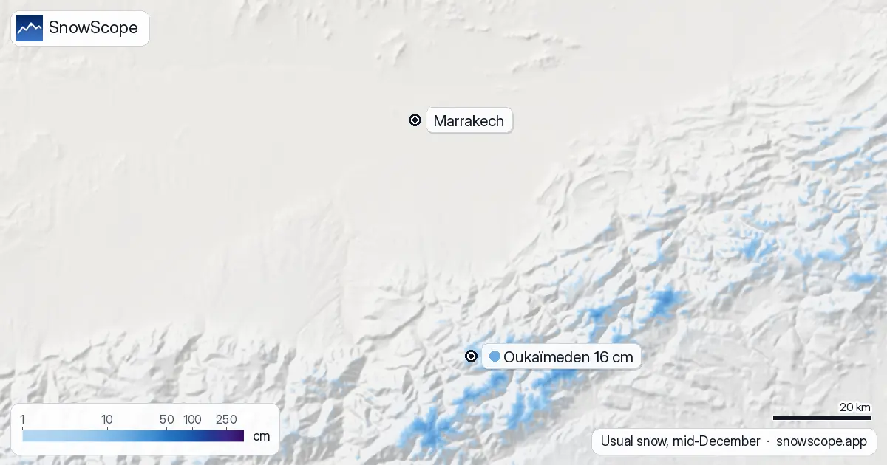

أوكايمدن انطلاقا من مراكش: ويكاند ديال تزحلق ف دجنبر بميزانية صغيرة
Oukaïmeden كاين على بُعد 50 كم من مراكش على خط الغراب—قريب بزاف حتى تقضي عطلة نهاية أسبوع، وعالي بزاف حتى يبقى فيه التلج كاع ما تشتا المدينة. لكن ديسمبر هو قمار: تقريبا فنص الشهر كاين 16 سم فالجهة الوسطانية، فحتاج تتبع التلج الجديد، ما التاريخ.
شوف توقعات التلج مباشرة ديال Oukaimden ski resort فالتطبيق ديال SnowScopeالعلو ديال التلج، التنبيهات والخريطة 3D، فابور.
واش الارتفاع مهم، واش هو ما مهمش
المحطة كاينة من 2600 م فالقاع إلى 3258 م فالقمة. كنتظر تكون القمة أكتر تلج بزاف من البيستات الدنيا، لكن ديسمبر فالاطلس كيكسر هاد القانون. فـ 15 ديسمبر، شتاء عادي كايجيب 15 سم فالقاع، 16 سم فالجهة الوسطانية (2929 م) و 17 سم فالقمة. الفرق بغيتو تقريبا سنتيمتر واحد.
هاد الحاجة كاتوقع لأن العواصف مهمة أكتر بزاف من الأمتار. التلج كاينزل على الجبل كلو فنفس الوقت، بعد كايذوب الكل بين العواصف. باش في البداية، الشمس والريح كاتسلخ البيستات الدنيا أكتر بسرعة، فالجهات الوسطانية والفوقانية كاتبقى قريبة من بعضها فالعلو. غير من جنوار فواحد، الارتفاع كايخلق فرق حقيقي.

الأسبوع الأول ديال ديسمبر: رهان ديال خسران
فـ 1 ديسمبر، الجهة الوسطانية عادي كايكون فيها 12 سم. هاد الحاجة كتبدو كبداية، لكن 28 % من الشتوات اللي فاتو كانت كتاع خاوية—أقل من 5 سم—فهاد التاريخ. غير 4 % من الشتوات اللي فاتو اللي بنات 50 سم ديال القاعدة بحال الأسبوع الأول ديال ديسمبر. إذا عندك عطلة نهاية أسبوع فابور فديسمبر باش، الجبل جميل بزاف للتمشية (شي جلابة دفيانة وجنيبات)، لكن التزلج هو لوتري.
التلج الأول اللي كايبقى عادي كايصل حول 5 نونبر، لكن التلج ديال نونبر كاينبهدل غالبا فشي أيام. خطط ديال رحلة ديسمبر غير إذا كنتي كتدير تقضي على التوقعات ديال التلج الجديد وتطلع فشي يومين أو تلاتة أيام.

من نص ديسمبر إلى نويل: الحظ كايتحسن
فـ 15 ديسمبر، العلو ديال التلج فالجهة الوسطانية كايطلع إلى 16 سم فشتاء عادي. أكتر من هاد، 43 % من الشتوات اللي فاتو عندهم الآن 25 سم ولا أكتر—ضعف النسبة فـ 1 ديسمبر. نهار نويل كايكون فيه 20 سم عادي، و 41 % من الشتوات اللي فاتو كايعبرو الخط ديال 25 سم.
حتى مع هاد، 20 % من شتوات ديسمبر لازم خاوية تقريبا فـ 15 ديسمبر. غير 11 % من الشتوات اللي فاتو عندهم قاعدة ديال 50 سم بحال فـ نص ديسمبر فالجهة الوسطانية. الشتاء اللي فات (2025-26) كسر هاد النمط: 33 سم فـ 15 ديسمبر، بعد طلعة حادة إلى 78 سم فـ نويل. هاد الحاجة كاتوقع تقريبا واحد من عشرة شتوات.
ليلة رأس السنة: أآمن تاريخ ديالك
فـ 31 ديسمبر، العلو العادي كايصل إلى 24 سم فالجهة الوسطانية، ونص من كل الشتوات اللي فاتو عندهم 25 سم. فالقمة (3258 م)، 20 % من الشتوات اللي فاتو بنات 50 سم فـ نهاية السنة، قاسا ب 15 % فالجهة الوسطانية. إذا حتاج تختار تاريخ من ديسمبر، ليلة رأس السنة هي إحصائيا أحسن فرصة ديالك.
بحال نفس الحاجة، ما حتا أسبوع من ديسمبر مضمون. النمط على 46 شتاء كايبين أن غير 13 % من السنين عندهم أسبوع كامل من التلج العادي 50 سم ولا أكتر فالجهة الوسطانية. عطلة نهاية أسبوع واحدة جيدة بعد عاصفة كايتبيض أسبوع كامل من التخبيطة.
الرؤية الطويلة: ديسمبر ما تبدلش
على 46 شتاء، ديسمبر بقا ما يتوقعش عليه. التلج فالجهة الوسطانية فـ 15 ديسمبر كان في المتوسط 14 سم فالشتوات اللي فاتو 1980–81 إلى 1994–95 و 11 سم فالشتوات اللي فاتو 2011–12 إلى 2025–26. في المرتين، تقريبا 40 % من الشتوات اللي فاتو وصلو إلى 25 سم فنص الشهر. ديسمبر الآن هو رقيق وغير محدود تقريبا مثل ما كان قبل أربعين سنة.
فـ مارس، الصورة كاتتبدل: التلج كايبلغ ذروتو الآن، 53 سم عادي فالجهة الوسطانية و 58 سم فالقمة. إذا ديسمبر خيب الآمال، بتو الرحلة ديالك إلى أواخر فبراير أو مارس كايبيح فرص أكتر بزاف ديال التلج الغميق.
الخدمات اللوجستية واش غتجيب
بطاقات الرفع والمعدات للكري فابور نفس الكتاب—ما كايكون فيه تاريف رسمي على الإنترنت. سول السكان ديال الكتبة ولا السكن ديالك على الأسعار قبل ما تلتزم. النقل من مراكش وليلة على الجبل عادي كايخذو معظم الميزانية ديالك.
جيب طبقات دفيانة، جنيبات ديال المشي (الجبل كايستاهل الزيارة حتى بغير التلج)، وشعلة رأس إذا كنتي تسوق ليلا. الطريق على الجبل كاتطلب الحذر، خاصة بعد عاصفة. تفقد الحالة ديال الطريق قبل ما تطلع من مراكش، وسوق بشي.
نصايح للي كيتزلجو
- قويس العين على التوقعات ديال التلج في الاطلس، بعد طلع فشي يومين أو تلاتة أيام ديال عاصفة. هاد النافذة الوحيدة كايكون أموثق من أي تاريخ ديال التقويم.
- إذا ديسمبر باش خاوي، ما تحزنش: تمشى الجهات العالية، تستمتع بالمنظر، وخطط ترجع فأواخر فبراير أو مارس كاع ما التلج يكون أعمق.
- فالطريق فوق من مراكش، طلع بركراري حتى تصل الجبل فالنهار. الطرق ديال الجبل كاينة حادة وضيقة، والرؤية كاتنبهدل بسرعة بعد الغروب.
- جيب لبيس دفيان حتى لو التلج رقيق: الريح قوية فوق 2600 م، وكايمكنك تتجمد بسرعة اللي تحت الشمس تهبط من تحت الحرف.
- قبل ما تكري سكيز ولا بورد، سول السعر على الكتاب—ما كايكون فيه تاريف رسمي على الإنترنت حتى تقارن.
على هاد الأرقام
العلو ديال التلج فالمحطات هو أكثر تلج فالجهة الفوقانية فالتاريخ المكتوب؛ هادو تقديرات لمنطقة، ماشي قياس فنقطة وحدة. التوقعات يمكن تتبدل. ديما شوف النشرة الرسمية ديال الانهيارات قبل ما تخرج من البيست.
كيفاش تستاشهد بهاد المقال
للبحث، التعليم ولا الصحافة: الأرقام والرسومات تقدر تعاود تخدم بيهم بحرية تحت CC BY 4.0 مع هاد الاستشهاد.
SnowScope (2026), أوكايمدن انطلاقا من مراكش: ويكاند ديال تزحلق ف دجنبر بميزانية صغيرة, https://snowscope.app/blog/ar/2026/11/oukaimeden-depuis-marrakech-week-end-ski-decembre-budget.html, تشاف ف 2026-11-14
SnowScope (Atlas Labs). (2026, November 14). أوكايمدن انطلاقا من مراكش: ويكاند ديال تزحلق ف دجنبر بميزانية صغيرة. SnowScope snow reports. https://snowscope.app/blog/ar/2026/11/oukaimeden-depuis-marrakech-week-end-ski-decembre-budget.html
BibTeX
@misc{snowscope2026oukaimedendepuismarrakec,
author = {{SnowScope (Atlas Labs)}},
title = {أوكايمدن انطلاقا من مراكش: ويكاند ديال تزحلق ف دجنبر بميزانية صغيرة},
year = {2026},
month = nov,
howpublished = {\url{https://snowscope.app/blog/ar/2026/11/oukaimeden-depuis-marrakech-week-end-ski-decembre-budget.html}},
note = {Published 2026-11-14 13:29 UTC; accessed 2026-11-14}
}· CC BY 4.0 · الطريقة، الداتا والأدوات →
Oukaimden ski resort: التلج والحرارة حسب العلو، هاد الشتا مقارنة مع اللي فاتت (الأدوات) →
تابع Oukaimden ski resort
فابور: ميساج ملي يجي التلج، والتوقعات كل صباح.
تقارير أخرى ديال التلج

Oukaimden طاح فيها 14 سم ديال تلج جديد ف 72 ساعة اللي فاتو، منهم 5 سم ف 24 ساعة اللي فاتو. دابا فيها تقريبا 3 سم فالجهة الفوقانية، حسب الموديل ديال …

لا توجد تلج بعد في Oukaïmeden يوم 12 نونبر. قمم الأطلس ما فيها حتى حاجة؛ الموسم الشتوي عادة كايكون فأقصى حاله فشهر مارس بـ 58 سم في الجهة الفوقانية.

دجنبر يجيب غير 18 سم فالعمق ديال التلج فالمنتصف ديال الجبل فأوكايمدن، بحال 53 سم فمارس. البداية ديال الموسم فيها التلج قليل لكن ممكن. المعطيات من 13 نوفمبر 2026.